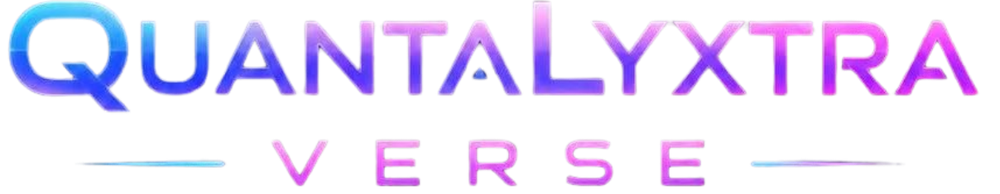

Lebih mudah ditemukan
Susun akses digital agar lebih mudah dijangkau.

Susun akses digital agar lebih mudah dijangkau.
Jaga aktivitas dan referensi tetap tertata.
Berpindah kebutuhan dengan lebih praktis.
Quantalyxtra Verse membantu mengumpulkan akses dan referensi kerja dalam satu tempat yang nyaman dijelajahi. Masuk atau buat akun untuk membuka ruang pribadimu.
Buat akun atau masuk untuk melanjutkan ke pengalaman utama Quantalyxtra Verse.
Pengelolaan konten tersedia secara terpisah untuk akun admin.
Gunakan tampilan responsif di layar desktop maupun ponsel.